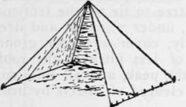
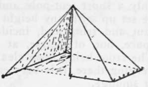

Types Of Light Tents. Part 3
Description
This section is from the book "Camping And Woodcraft", by Horace Kephart. Also available from Amazon: Camping and Woodcraft.
Types Of Light Tents. Part 3
Some canoeists in " civilized waters " prefer the marquee (Fig. 42), because it has more head-room than a pyramidal tent. It has spreaders attached to the center pole, like ribs of an umbrella, to extend the eaves, and guy ropes to stiffen them against wind; but in spite of these braces it is not very stable.
Semi-Pyramidal Tents
The lightest of enclosed tents that allow a man to stand upright under shelter is one shaped like a pyramid cut vertically in half. Since the pole, if one is used, stands in front, it is less in the way than the center pole of a pyramidal tent, bpt a any or two must be run out forward to brace it. A better rig, when poles can be cut on the spot, is an outside tripod (as an example see Fig. 66). If a small tree happens to stand conveniently on the camp site, the tent peak can be suspended from it.
Fig. 43. George Tent.
A good example of this model is the George tent (Figs. 43, 44). For two men, its dimensions are 7x7x7 ft. In waterproofed " balloon silk" it weighs about 5*4 lbs., including pegs, and rolls up into a parcel 12x5 in., convenient for the knapsack. To pitch it: Peg down at 1 and 2 (Fig. 44), carry 3 and 6 at right angles to 1 and 2, pull taut, peg down, insert pole, and raise; or suspend as above. This is done in one minute, if no poles have to be cut. A cheesecloth front is needed in fly time. In cold weather the front is left open, and the sloping back and sides reflect camp-fire heat down upon the sleepers.
Fig. 44. Layout of George Tent.
Semi-pyramidal tents must be well guyed to stand up in a contrary wind. They are best suited to canoeists and forest cruisers.
Modified Pyramid Tent
A shelter tent adaptable to varied conditions, and a very good model for " go light " trips, was recently described in Outing by its designer, R. S. Royce. His article is here reprinted in full, by permission of the publishers.
The Royce Tent
" Several seasons ago, desiring a very light tent for side trips, or, in fact, anywhere that a comfortable shelter was needed under conditions which would not permit of using a wall tent, one was designed which so well met all requirements and aroused so much interest among the outing brotherhood as to warrant presenting a detailed description of it.
Keeping away from the idea of a mere shelter to crawl under, and insisting on having something really comfortable in the event of several stormy days or nights, and with a spirit of comradeship that finds more fun in an outing shared by one or two friends, rather than alone, a tent was designed to afford room for two or three and high enough to sit, dress, or stand in.
This sounds like something too big for the ruck-sack, or a minor corner of a pack-basket, without crowding the other essentials of going light. However, it was accomplished at a weight of four pounds, making a package about 6 inches in diameter and 12 inches long for carrying; erected, it covers 56 square feet, as a closed half pyramid 7 feet 9 inches high and 7 1/2 feet square (Fig. 45). But this is not all, for it is extensible to a pyramid 7 1/2 x 13 feet, still 7 feet 9 inches high, but open at one end to the peak (Fig. 47) ; or it may be extended at the front of the half pyramid in a triangle the width of the tent, 7 1/2 X 2 1/2 feet, closing completely and increasing the length of the tent to 10 feet (Fig. 46). The objection is immediately presented that this is too large a tent for going even moderately light, but one may reasonably ask how much smaller package or lighter can you take, and get room for standing, sitting, and sleeping?
Considering this, first, as a half pyramid tent, 7 1/2 x 7 1/2 and 7 3/4 feet high; no form gives so much ground space with headroom from so little material as a pyramid; none sheds water better, nor resists wind so well, and none is simpler or quicker to erect.
The objections to a pyramid, of scant headroom and lost space on ground by rapidly sloping roofs; of presence of pole in the center, and of possible rain leak anywhere on the entrance side from peak to ground, are largely overcome by carrying the peak to 7 3/4 feet, giving more headroom and nearer perpendicular roofs; and by making the peak over the center of one side, instead of in the middle of the tent, giving a perpendicular entrance opening and no pole in the ground space. This gives better than a 45-degree pitch to the back roof and about 65-degree pitch to the side roofs: sheds rain well, without necessary recourse to waterproofing, and allows of erection not only over a single upright pole, or suspension from overhanging branch, but also permits of setting up near any upright tree to which the peak-line may be extended diagonally upward in a general line with the slope of the back roof, thus generally eliminating the tent-pole problem.
Now, some of the arguments for this half pyramid being given, another exists in the use of it with the front open (flaps turned away back on the side roofs), when it proves to be as truly a baker tent as the one usually described as such, and heats well with a fire in front.
Fig. 45. Front Upright.
Fig. 46. Wings Advanced 2 1/2 feet.
Fig. 47. Wings Extended sheltering 7 1/2 x13 feet.
Fig. 48. One Wing Closed, One Open for Wind-break.
Continue to: